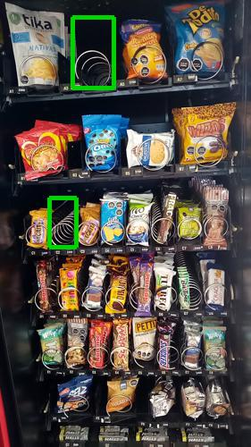
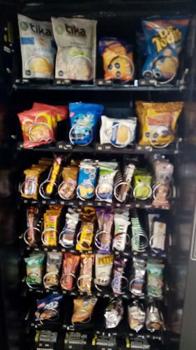

Antes de AbastecerSe detectaron 2 espirales vacios.

id 390.747 |
Luego de AbastecerNo se detectaron espirales vacios.

id 390.748 |
|
| Fecha |
Reporte |
Vacios ANT |
% Abast |
% Quiebre |
Sum QTY |
Rotación Diaria |
Abast hace (días) |
| 03-08-2021 |
Viendo |
2 |
5.4 |
5.0 |
27 |
3 |
7 |
| 27-07-2021 |
Ver |
1 |
6.3 |
2.5 |
32 |
4 |
7 |
| 20-07-2021 |
Ver |
0 |
2.2 |
0 |
11 |
1 |
7 |
| 13-07-2021 |
Ver |
0 |
7.3 |
0 |
37 |
5 |
7 |
| 06-07-2021 |
Ver |
2 |
8.9 |
5.0 |
45 |
6 |
7 |
| 29-06-2021 |
Ver |
0 |
4.8 |
0 |
24 |
3 |
7 |
|
|
|
Se abasteció la máquina con:
Total de 27 unidades de 3 productos.
| Qty. |
Producto |
SubFamilia |
Familia |
| 12 |
Super Ocho Clasico 24 Gr |
Bañados |
Snack |
| 10 |
Negrita 20 Gr |
Bañados |
Snack |
| 5 |
Papas Fritas Tika Chiloe |
Salados |
Snack |
| Productos más abastecidos en últimas 6 semanas:
| Nro. Abast |
Qty/Abast |
Producto |
Abast hace (días) |
Fecha |
| 6 |
2 |
Galleta Mini Oreo 50G 54U |
14 |
20-07-2021 |
| 4 |
12 |
Brownie Choc 24Un Nutrabi |
7 |
27-07-2021 |
| 4 |
7 |
Tuareg Coco Indiv. 24X48 |
7 |
27-07-2021 |
| 4 |
4 |
Ramitas Queso Evercrisp |
14 |
20-07-2021 |
| 4 |
3 |
De Todito I Evercrisp 50G |
7 |
27-07-2021 |
| Productos menos abastecidos en últimas 6 semanas:
| Nro. Abast |
Qty/Abast |
Producto |
Abast hace (días) |
Fecha |
| 1 |
5 |
Papas Fritas Tika Chiloe |
0 |
03-08-2021 |
| 2 |
2 |
Papas Fritas Tika Patagon |
21 |
13-07-2021 |
| 2 |
2 |
Frac Clasica Individual 3 |
7 |
27-07-2021 |
| 2 |
4 |
Papas Nativas Andina Tika |
35 |
29-06-2021 |
| 2 |
4 |
Mizos Chocolate Naranja |
14 |
20-07-2021 |
|
|